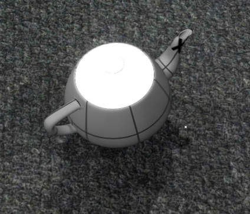
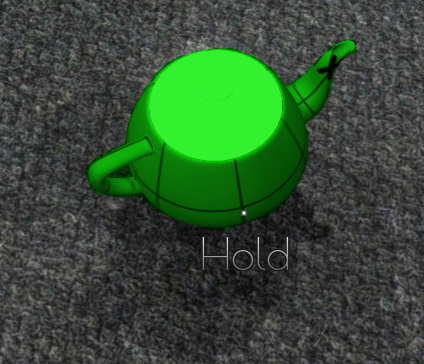

Okay, so I initially thought this would be something quick/easy to get working, but I keep running into problems.
What I want to do is have an object be highlighted while I mouse over it, like this:

The teapot is an instance of a Clickable class I created that derives from ScriptObject. When the cursor hovers over the teapot it shows text, and I want to modify the material to be noticeably highlighted. Once the cursor is no longer hovering over the object, the highlight should turn off, and the material return to it’s original state.
I eventually want to do this with a shader, but I’m not that familiar with Urho’s shader configuration (which is a little confusing), and can’t quite figure out how to set that up (any suggestions on that would be appreciated). So in the meantime I thought I would just modify the material’s color like is done on the unofficial wiki.
I can access the teapot’s StaticModel, and I figured I would just get a reference to it’s material using GetMaterial(), and then use GetShaderParamter() to get it’s original diffuse color, save it to a variable, and then use SetShaderParameter() to modify the color. Then when the cursor stops hovering on the object I would use SetShaderParameter() again to restore the original color.
The documentation for StaticModel clearly has a GetMaterial(), but I cannot seem to get it to work. I get an error message saying "No Matching Signatures to ‘StaticModel::GetMaterial(const int)’. I’m passing a 0 as the index. I’ve tried declaring and passing it as a uint, and passing no argument (in case there was a default value). Same issue, not such function signature. I’m probably missing something simple here (like usual) but I can’t see what it is.
Edit: And I am using Angelscript, which might have some bearing on this.